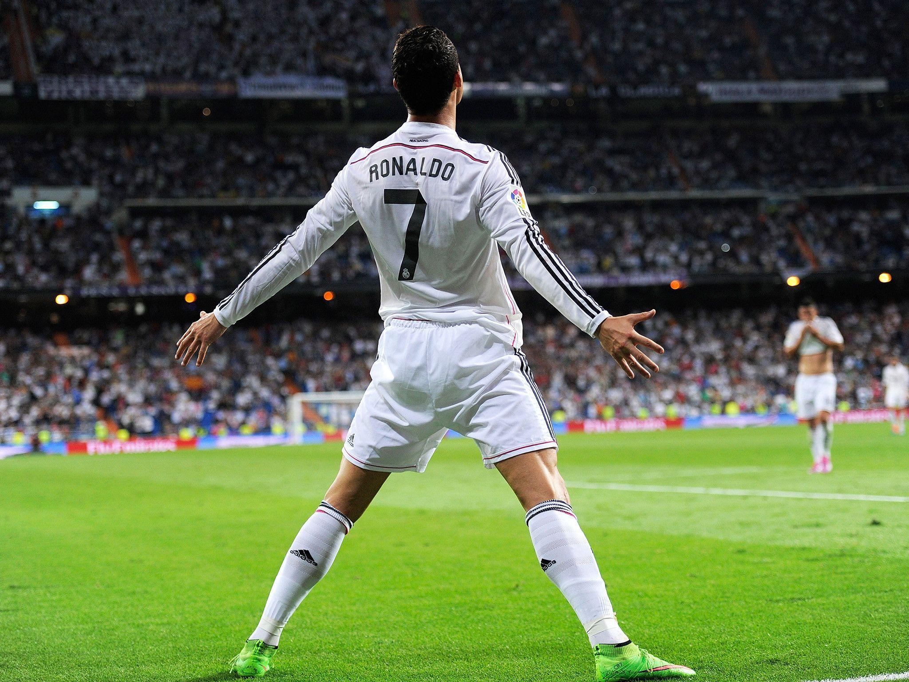
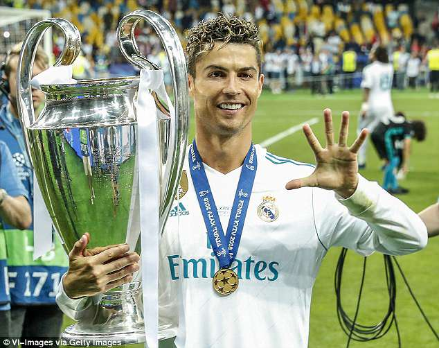
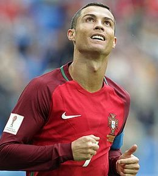

A Máquina de Gols
Com uma disciplina incomparável e uma mentalidade vencedora, Cristiano Ronaldo tornou-se o maior artilheiro da história do futebol em jogos oficiais. Vencedor de 5 Bolas de Ouro e 5 Champions League, o português é o símbolo máximo da perfeição física e técnica.
Galeria da Lenda

O icônico grito de "SIUUU"

O Senhor Champions League

O Capitão e Líder de Portugal
Números Históricos
| Categoria | Marca |
|---|---|
| Gols na Carreira | +900 Gols |
| Champions League | 5 Títulos |
| Bolas de Ouro | 5 Prêmios |